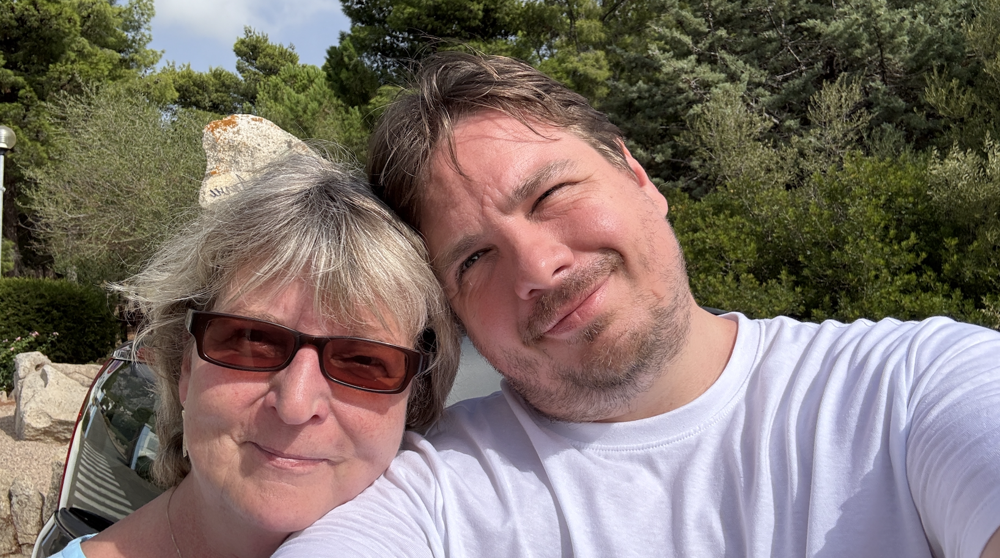

O mně
Narodil jsem se 7. 1. 1984, jsem mezinárodní mistr v šachu a věnuji se IT analytice, datům, digitálním aplikacím, integracím a složitým systémům. Mám velkou rodinu.
Profesní dráha
- IT analytik se zaměřením na digitální aplikace
- Datový expert pro návrh a řízení datových toků
- Integrace systémů a práce s komplexními prostředími
- Silný důraz na praktické výsledky a kvalitu řešení
Šachová dráha
- Mezinárodní mistr v šachu
- Mistr České republiky v šachu (2018)
- Dlouhodobý fokus na strategii, disciplínu a výkon
Kontakt
Email: svoboda.svato@gmail.com
LinkedIn: doplnit odkaz
GitHub: doplnit odkaz
Instagram: doplnit odkaz